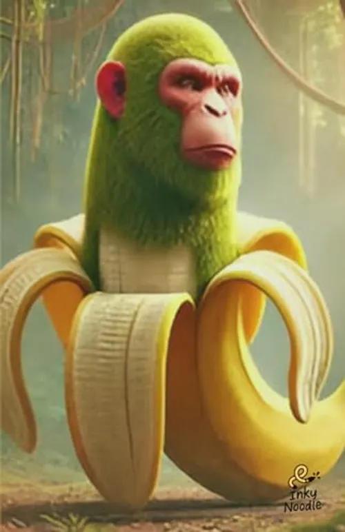

Chimpanzini bananini
Chimpanzini Bananini is an iconic character from the phenomenon known as Italian Brainrot, a type of absurd and chaotic content that has gone viral on platforms like TikTok. It was created by TikTok user @alexey_pigeon and posted on March 13, 2025. The original video features six chimpanzee-fruit hybrids, with Chimpanzini Bananini being the most prominent: a banana with a green chimpanzee's head sticking out of one end. The audio includes a song with lyrics in an unintelligible language that mimics Italian.